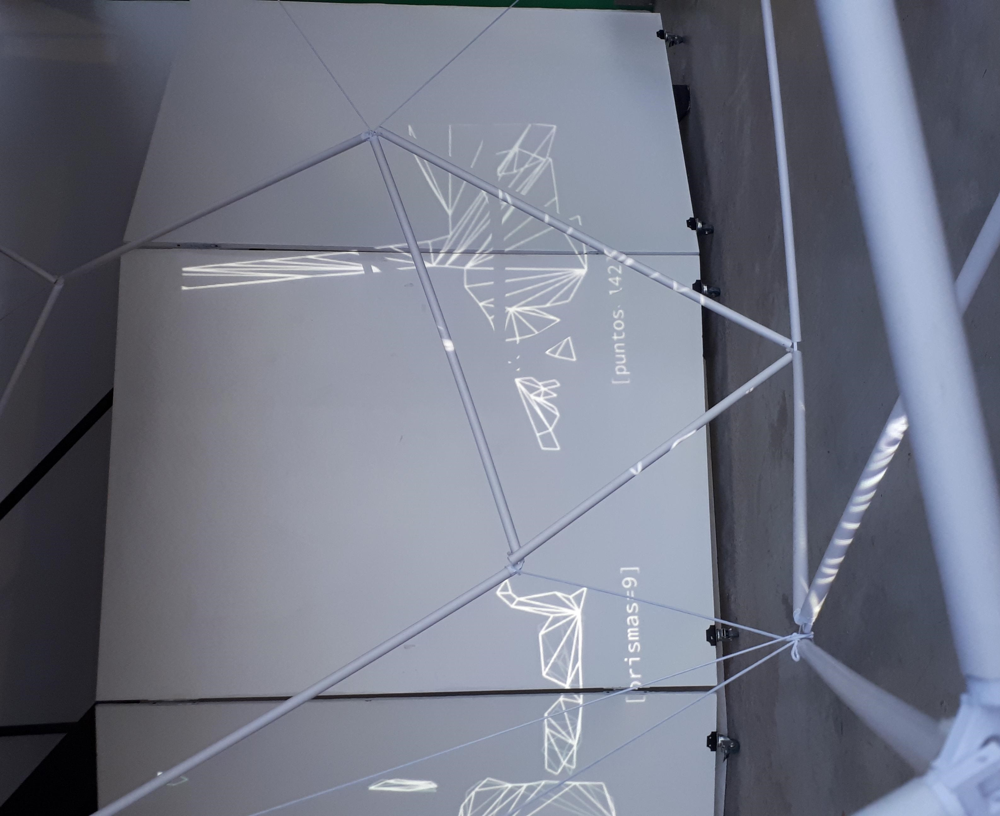

Se trató de una instalación estructural fija de caños de pvc y tensores que ocupaban dos pisos (aproximadamente un cubo 16m²) instalada en una galería cuya particularidad era que tres de sus cuatro paredes eran vidriadas y ubicada en el medio de un centro comercial. El diseño de la estructura está pensada principalmente a partir de pentágonos y fue generada por un algoritmo que unió los vértices en el menor número posibles de aristas o tensores.
Para realizar la estructura hice un exhaustivo estudio sobre sistemas naturales, de insectos y larvas, luego sus formas orgánicas fueron llevadas a una abstracción geométrica, es decir, pasé por un proceso de reducción de información, que en un principio fue visual e intuitivo pero que luego de la investigación realicé con una operatoria de discretización a través de la programación. Si bien dicha estructura no poseía movimiento, este era simulado por medio de luces programadas que respondían al comportamiento de las geometrías analizada del exterior de la galería.
El funcionamiento de la obra sucedía por medio de una cámara de vigilancia que detectaba las formas humanas y los diferentes movimientos que realizaban en el exterior del espacio expositivo. Estas formas y movimientos eran ingresados en un software con el que se analizaban y detectaban puntos de la imagen, dibujando geometrías. Los puntos detectados eran tomados como dato de ingreso del exterior, cuya información numérica de posición se comunicaba con las luces que reaccionaban ejecutando un comportamiento digitalizado. En la parte inferior de la sala, se proyectaba la imagen temporalizada que captaba la cámara y las geometrías que surgían de su análisis. “data_mesh” puede entenderse como un sistema, no natural pero si basado en lo natural.